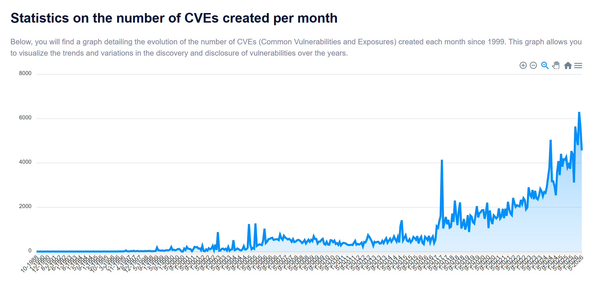

起初人们以为这只是一个普通的Linux漏洞…
前车之鉴
CVE-2016-5195 Dirty-COW
CVE-2022-0847 Dirty-Pipe
CVE-2022-2602 io_uring-UAF
群魔乱舞
CVE-2026-31431 Copy Fail
CVE-2026-43284 CVE-2026-43500 Dirty Frag
CVE-2026-46300 Fragnesia
CVE-2026-46333 SSH-Keysign-pwn
PinTheft
CVE-2026-42945 NGINX-Rift
CVE-2026-43121 io_uring-ZCRX-freelist
CVE-2026-40369 某Windows11漏洞
某macos漏洞
某pixel10漏洞
CVE-2026-21509 某Office漏洞
这是炒作吗?

根据这个网站的数据,每个月发现的CVE个数确实是几乎逐年上升的,偶尔有几个漏洞火出圈,是正常现象.
但如果是一个月内五个,甚至更多漏洞火出圈呢?甚至几乎都是针对Linux的,而且只要能读文件就能复现…那很严重了,甚至Linus本人都说了,别再交AI生成的漏洞报告了,首先是AI生成的他们自己估计都看不懂,而且是很多人用AI探测出来的结果可能是重复的,最后是这样的报告因为AI的加持已经变得超级多,快爆炸了…
Linus还说,如果自己会修的话请连着修复策略一起报上来.
Linux危机元年?
唔使惊,是技术性调整!
前一阵子mythos自称挖了一堆漏洞.
前几天据说mythos已经在内测了.
可以预见地,在AI的加持下,挖出来的漏洞会越来越多,这只是冰山一角…